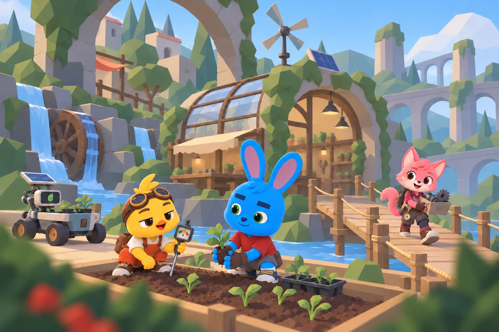
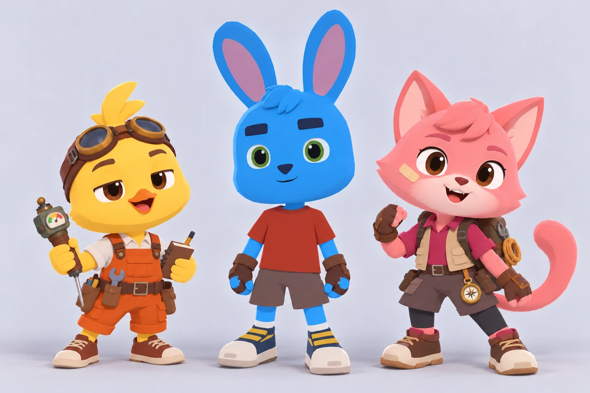
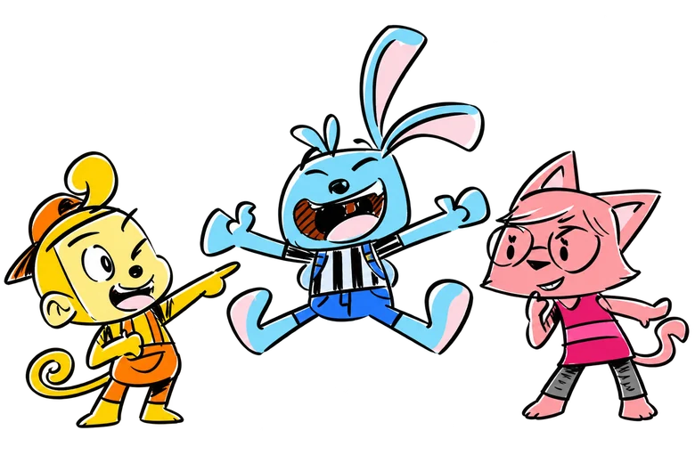
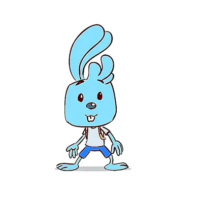
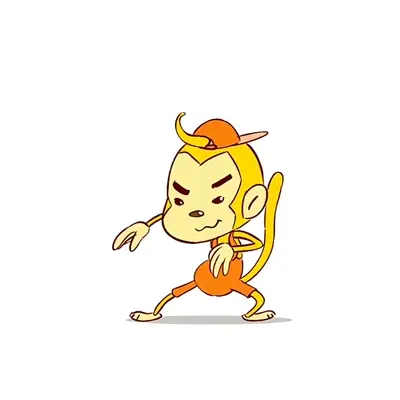
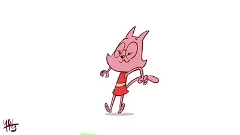
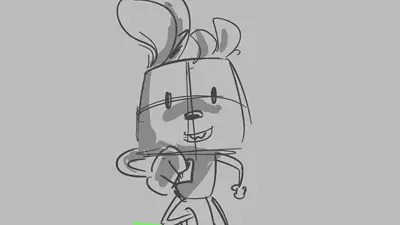
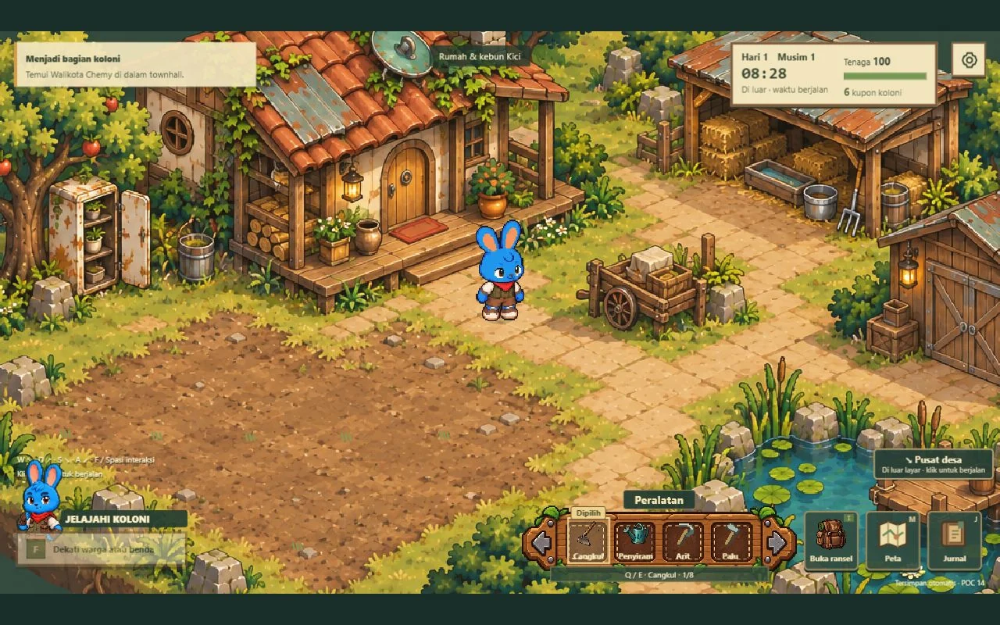

Original IP · Dalam pengembangan
Kici dan
Pasukan Bumi.
Petualangan kecil.
Kepedulian yang tumbuh bersama.
Meet the crew.
Kenalkan, Kici. Bersama sahabat-sahabatnya, ia belajar merawat tempat tinggal, saling membantu, dan hidup bersama alam. Rasa ingin tahu mereka mencerminkan anak-anak hari ini: punya banyak kemungkinan untuk membuat hari esok lebih baik.
Desain Kici sudah final. Cerita dan episode perdananya masih kami kembangkan.

Kici character test.
Sapaan pertama dari Kici. Uji gerak dan ekspresi dengan desain karakter final.
Inside the world.
Kebun yang kembali hidup, bersama Kici dan sahabatnya.

Early explorations.
Cuplikan proses pencarian gerak, ekspresi, dan suasana cerita. Tampilan Kici di arsip ini mendahului desain final.





A world to play in
Merawat kebun.
Mengenal tetangga.
Kami juga mengeksplorasi dunia Kici lewat permainan. Berkebun, menjelajah, dan berinteraksi dengan warga menjadi cara untuk merasakan kehidupan di dalamnya.
Prototipe awal; tampilan dan mekanik permainan masih dikembangkan.
Dalam tahap pengembangan
Ikut membentuk dunia Kici.
Kami membuka percakapan dengan animator, pengembang game, pendidik, dan mitra kreatif. Kolaborasi dapat dimulai dari pengembangan episode pilot, permainan, atau kegiatan yang membawa nilai kepedulian Kici kepada anak.
Masih ada cerita lainnya.
← Kembali ke Storygrove